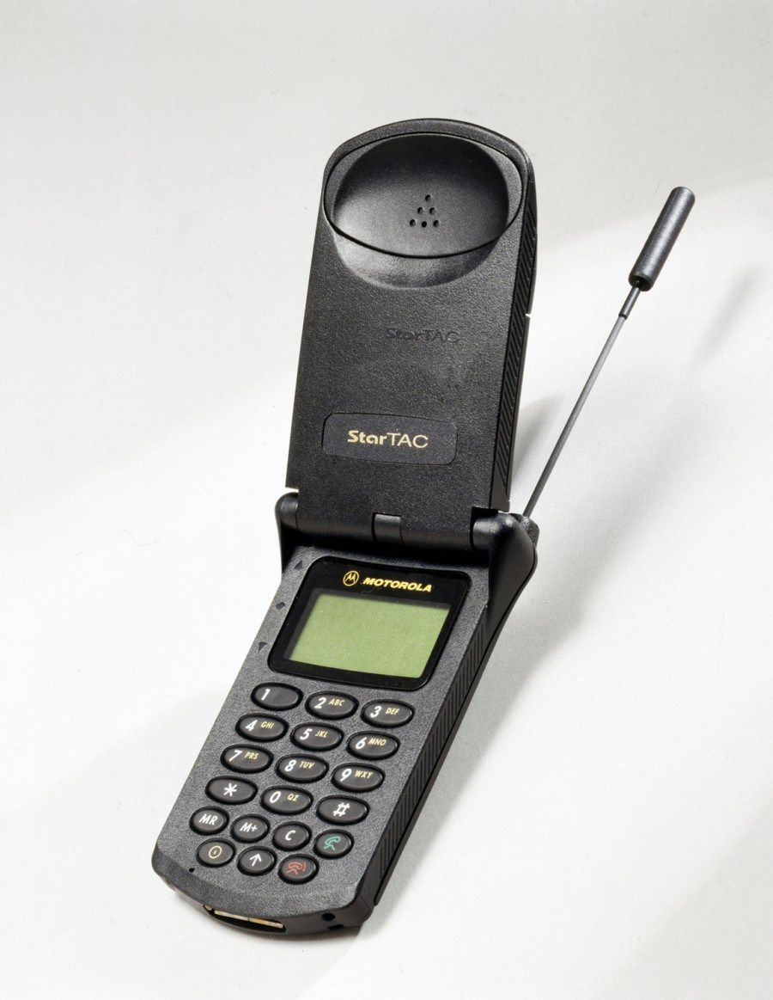

Motorola StarTAC // around 1998
My father owned this phone and I thought it was amazingly cool in those times
Phillips Savvy // around 2000
The first phone I really owned. It was cumbersome. It took ages to write a SMS. But it was MINE.

Nokia 6110 Navigator // around 2003
Great memories with this phone. I was so compact and I had a priceless unlimited minutes plan.
Sony Ericsson W580i // around 2005
The best feature of this phone was to store a lot of music in it and listen to music as a Walkman
Nokia X6 // around 2008
Lovely phone with a huge screen, it felt like a mini computer

HTC Desire // around 2010
Proper smartphone, I felt like a I was managing Wall Street

Iphone 5 // around 2013
My first iphone, I fell in love with the apple

Motorola StarTAC // around 2016
Great phone, magnificient screen. time for upgrading